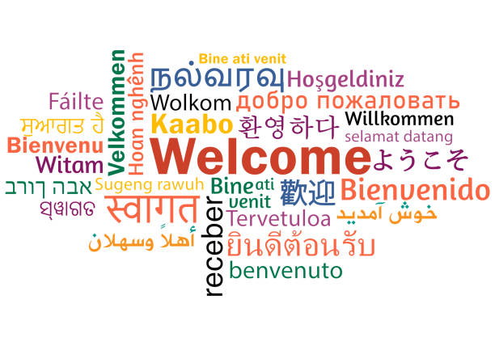

ITSHEPELENG LERATO

ABOUT ME
Hi, I'm a passionate and adaptable IT Professional with love for continuous learning and eagerness to explore new opportunities. I'm passionate about bringing my ideas to life through innovative digital solutions. I already have background tackling new challenges in the technology industry. I believe enhancing the accuracy and abilities of AI will be beneficial for current and future generations.
I am currently pursuing a Diploma in Information Technology at the Central University of Technology, Bloemfontein. I have a strong foundation in programming, web development, and data analysis. I am eager to apply my skills and knowledge to real-world projects and contribute to the success of innovative initiatives. Navigate to the projects section to view some of my work.
SOFTWARE SKILLS
.png)


MY JOURNEY WITH DATA
Understanding data from its real-world collection point to its application architecture.
Fieldwork Supervisor — Data Collection for Census 2022, Statistics South Africa
Operations, Field Supervision & Data Quality Control
- Supervised field operations and managed primary survey data collection workflows.
- Enforced data integrity, auditing raw submissions to eliminate capture errors.
- Gained deep, practical insight into human-factor edge cases in primary data entry.
AI Data Trainer
Training LLMs by creating, labelling, and refining datasets.
- Interpreting annotation guidelines
- Labelling data
- Flagging inconsistencies and errors in datasets
EDUCATION
Central University of Technology
Diploma • Information Technology
Jeppe College Bloemfontein
Diploma N6 • Systems Development
“Education is the most powerful weapon which you can use to change the world.” — Nelson Mandela
LANGUAGE [COMMUNICATION]

“The limits of my language are the limits of my world.” — Ludwig Wittgenstein